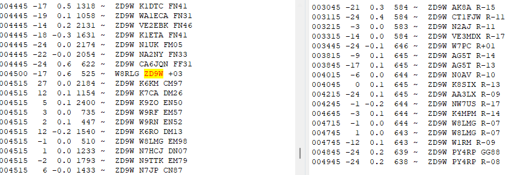

I understood pretty much as you said, Paul. Since the DX seems to look like F/H, maybe the only way to know for sure is if you see a caller getting moved to his frequency for the contact? I guess if I am calling in that odd or even sequence, I would not see any callers reply to the DX. So, I stop from time to time to see what I am missing when I am in TX mode. It shows how busy the band is and I should seem callers moving and replying. If there is another method of knowing, I'd like to learn about it.I am seeing 'a million' callers on 40 M now but I have not seen one get a call of them providing a signal report. That could mean they are not getting called by the ZD9 or for some reason I just do not see that part of the exchange even when just monitoring. And that would remain a mystery to me.I am making some contacts despite my ongoing confusion!73 to all.AlOn Sun, Oct 1, 2023 at 5:17 PM Paul N6PSE <pauln6pse@gmail.com> wrote:ZD9W is running MSHV. You can call normal FT8 or as a Hound. The advantage of calling him in normal FT8 is that you can call him in open areas of the waterfallbelow 1000Hz. Many of us have success calling in the 200-300Hz or 800-1000 Hz range for MSHV stations. Just don't call in his space on the waterfall. Leave that for the hounds who will give their singal reports there.THanks,Paul N6PSEOn Sun, Oct 1, 2023 at 4:43 PM Al N6TA via Chat <chat@ncdxc.org> wrote:I have been calling on 20 m not a hound. Not called. Maybe I'll figure it out one day._______________________________________________Al
Chat mailing list
Chat@ncdxc.org
http://mail.ncdxc.org/mailman/listinfo/chat_ncdxc.org